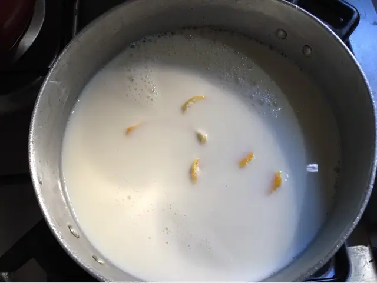
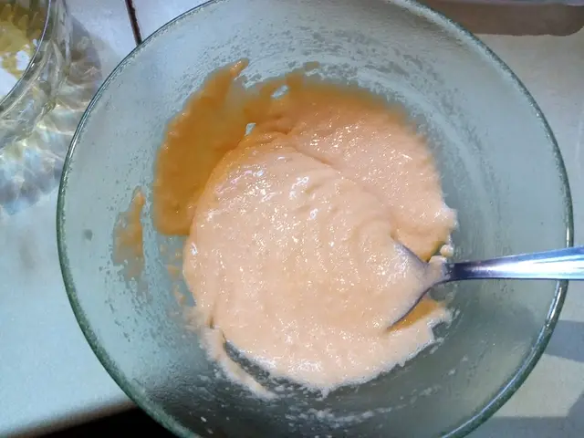
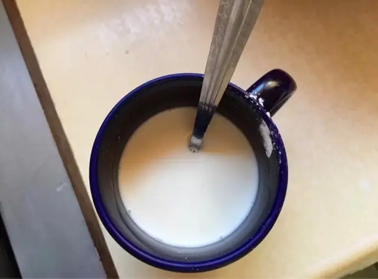
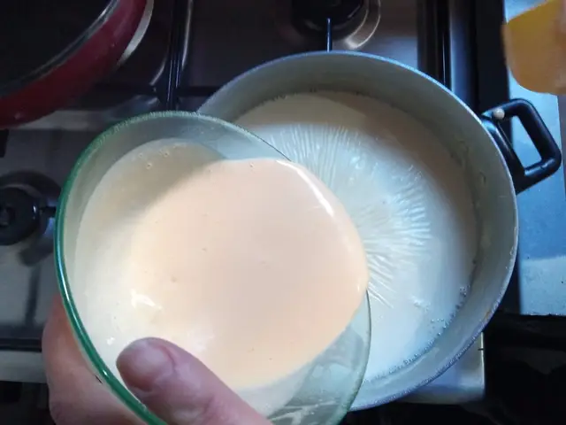
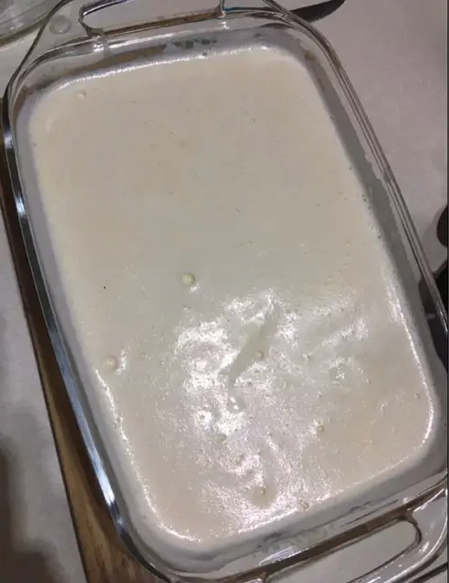

El arroz con leche es un postre de origen antiguo, cuyos antecedentes se remontan a Asia, donde se combinaban arroz y leche en preparaciones dulces. Llegó a Europa a través de los árabes en el siglo VIII, junto con el arroz, el azúcar y la canela. En la península ibérica se adaptó y evolucionó, apareciendo en recetarios andalusíes del siglo XIII. La primera receta similar al actual arroz con leche se documenta en 1607 en España. Con la colonización española, se difundió por América, adoptando ingredientes locales como dulce de leche o leche condensada. En cada país surgieron variantes: en México se añaden pasas, en Perú se sirve con mazamorra morada y en Argentina con dulce de leche. En Europa también hay versiones regionales. Sus ingredientes esenciales son arroz, leche, azúcar y canela. Es considerado un postre tradicional, hogareño y reconfortante. Aún hoy, es muy popular en todo el mundo.

| # | Información | Valor por porción (253 g) |
|---|---|---|
| 1 | Calorías | 493 kcal |
| 2 | Grasas | 18.8 g |
| 3 | Carbohidratos | 69.5 g |
| 4 | Proteínas | 12.0 g |
Ingredientes
| # | Ingrediente | Cantidad | Medida |
|---|---|---|---|
| 1 | Canela | 1/2 | ramita (3 g) |
| 2 | Esencia de Vainilla | 1/2 | cucharadita (3 g) |
| 3 | Arroz | 1/2 | taza (100 g) |
| 4 | Agua | 1/2 | vaso (125 ml) |
| 5 | Canela en Polvo | 1/2 | cucharadita (1 g) |
| 6 | Clavo de Olor | 1 | unidad (2 g) |
| 7 | Crema de Leche | 3.5 | cucharadas (49 ml) |
| 8 | Piel de Naranja | 1/2 | cucharada (3 g) |
| 9 | Leche Evaporada Entera | 1/2 | taza (120 ml) |
| 10 | Leche Condensada | 1/2 | taza (100 g) |
En una olla a fuego medio, poner la leche, 1/4 de taza de azúcar (los otros 2/4 los reservamos) y la cáscara o ralladura de limón.
En un bowl aparte, batir las yemas con los 2/4 de azúcar sobrantes hasta que quede una mezcla blanca como se muestra en la foto.
Cuando la mezcla de la olla (leche, azúcar, ralladura o cáscara de limón) esté caliente, poner el arroz.
Cuando el arroz esté a punto, disolver la maicena con un poco de leche en una taza y agregarla, revolviendo hasta que la mezcla espese un poco.
Por último, una vez que esté todo listo, sacar un poco de mezcla de la olla para poner en el bowl con yema y azúcar, mezclar y volver todo a la olla. Mezclar todo por 5 minutos más.
Una vez que esté listo, colocar en una fuente, esperar a que entibie y llevar a la heladera.
Merengue: batir las claras y cuando espumen, ir agregando de a poco el azúcar hasta que se formen picos.
Disfrutar con un poco de canela y el merengue por encima. ¡Espero sus fotos de cuando lo hagan!